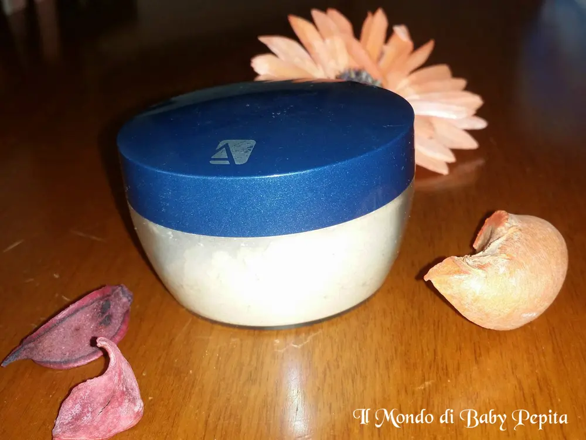
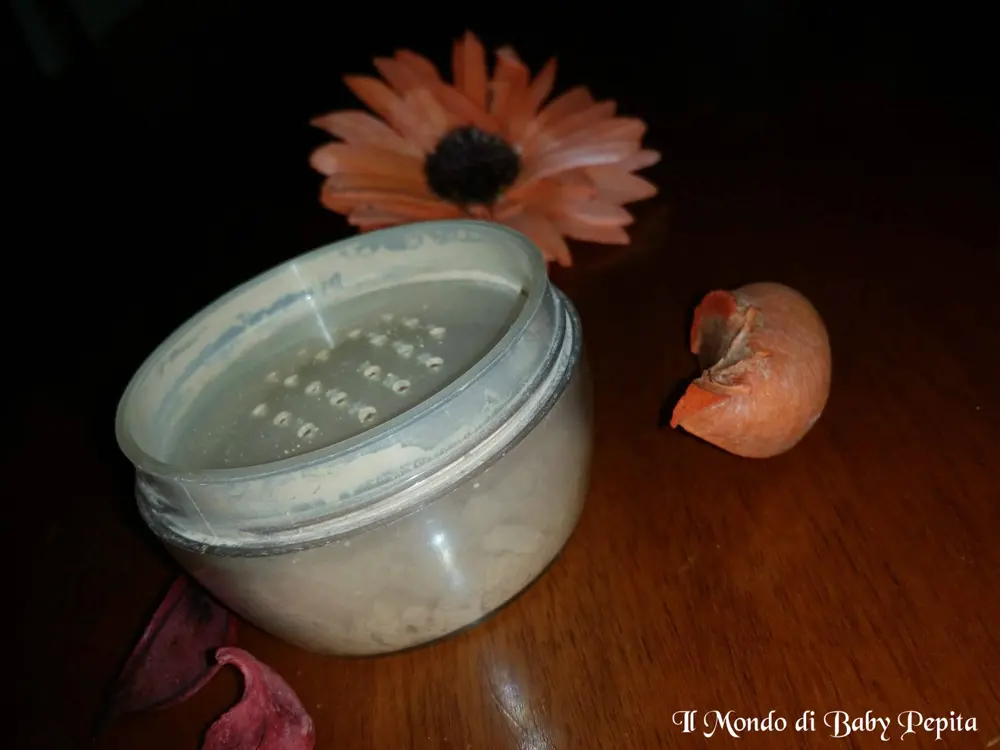
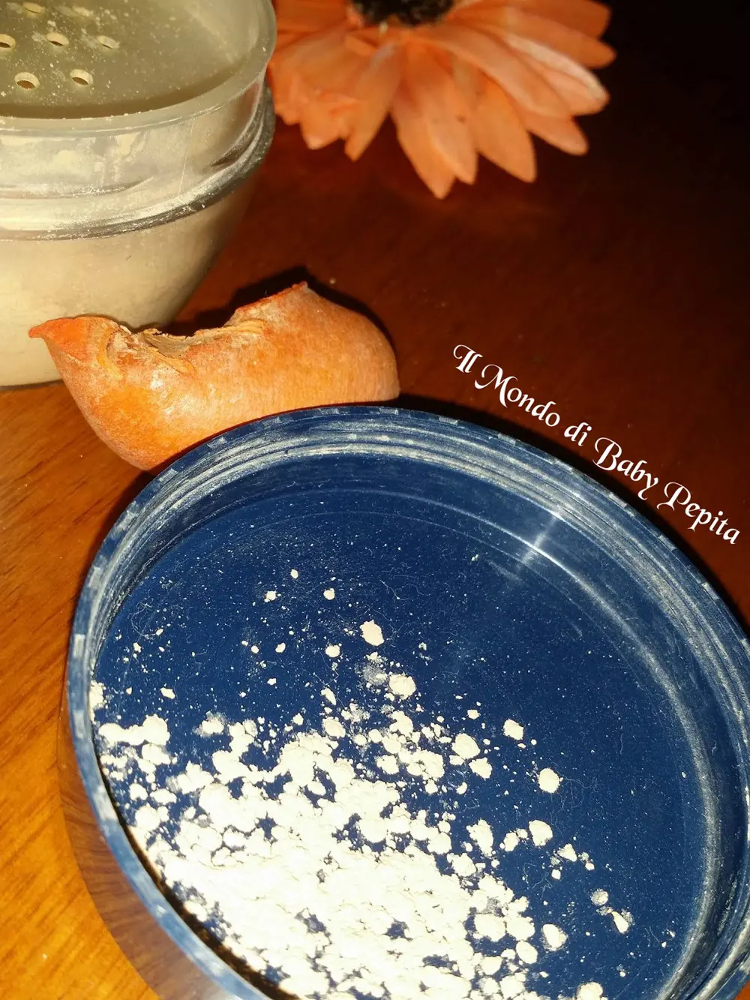
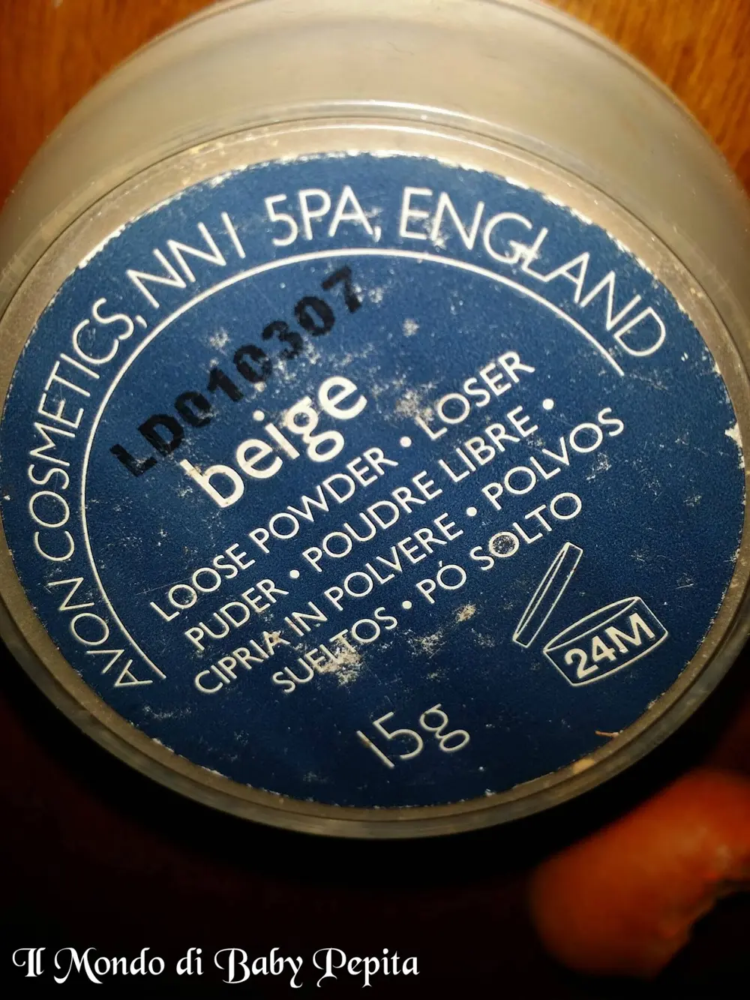
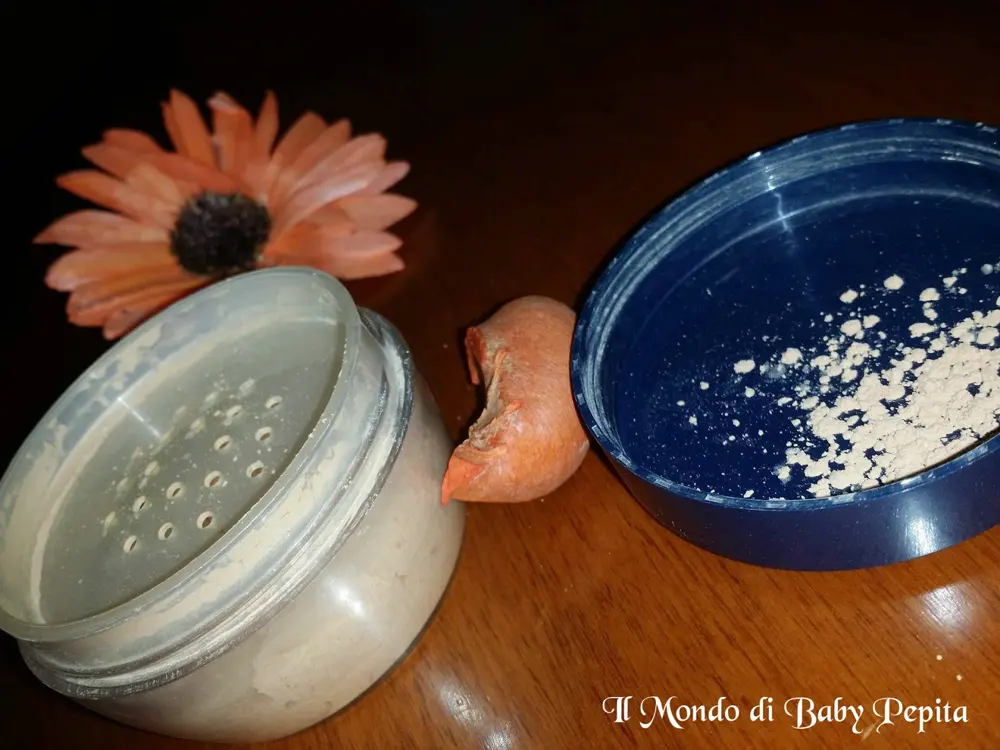

Cipria in polvere AVON - Beige

Torniamo a parlare di Avon, un marchio ormai conosciutissimo da anni e, chi mi segue sa che uso da diverso tempo. .
Stavolta non parlerò di rossetti, matite e lucidalabbra ma di cipria. .Acquistai questa cipria per curiosità e mai avrei creduto di non farne più a meno. L'ho tenuta per un pò conservata, devo ammetterlo, poi un giorno mi sono detta: "ma questa polvere è ben fatta, perchè non utilizzarla?".
In realtà, sappiamo benissimo che non uso fondo, cipria, correttori, fard e via dicendo così tanto, di conseguenza non sono una tipa di maschera da circo prima di uscire.
Sorvolando questo dettaglio, ho iniziato ad usare questa polvere, perchè è di polvere che si tratta.Inizialmente scettica del risultato perchè forse avevo preso un colore chiarissimo, BEIGE . .Ma invece mi sono ricreduta. .
La polvere si presenta in un barattolo trasparente, quindi dove si può tranquillamente vedere il colore e anche a che punto è la nostra cipria. (così non avremo sorprese di restare senza ahahah) e ha un tappo blu. .

Appena apriamo il barattolo noteremo che non c'è subito un contatto con la cipria poichè il barattolo è chiuso da una superficie fatto di tanti buchini che permette di dosare così la quantità della polvere che vogliamo utilizzare.

In verità si tratta di un vero e proprio fondotinta in polvere che contiene il 100% di puri pigmenti minerali micronizzati, adatto soprattutto per le pelli sensibili.
Non contiene talchi, oli o sostanze potenzialmente irritanti.
I cosmetici minerali - una delle grandi novità nel mondo del make up - hanno la caratteristica di essere naturali al 100%, ottenuti da minerali polverizzati. Questa la caratteristica di fondo che poi ogni casa produttrice di cosmetici ha fatto sua proponendo le varie combinazioni di prodotti.


Per me,che non sono un'amante di fondotinta, questa polvere è stata una vera scoperta, infatti quasi tutti i miei makeup sono fatti solo ed esclusivamente con un filo di questa polvere e un pò di blush per colorare il viso. Devo dire che mi piace molto l'effetto che fa sulla pelle:1. non è oliosa2. colora al punto giusto, senza creare striature, strisce e macchie3. fa quell'effetto bambola che io amo :D

Ho trovato che questa cipria facile da applicare, sia con spugnetta ma il più delle volte anche con un dischetto che usiamo per struccarci.
La cosa che colpisce di più, chi usa i minerali lo sa, che prodotti del genere sono sostanzialmente leggeri e Avon ha azzeccato nel segno.
La durata è ottima, io lo uso senza problemi per interi pomeriggi e arrivati a sera non ho un viso senza coprenza ma resta lì, (dico così perchè essendo una polvere molte volte si tende a pensare che con vento, sudore o altri movimenti, questa va via, ma non è questo il caso).
La confezione contiene 6 grammi di prodotto ed è disponibile in sei tonalità.
Prezzo : 15,00 €

Vi mostro alcuni makeup dove utilizzo il fondotinta in polvere avon . .
PS: non ho più la scatola in dotazione e pertanto non posso fornirvi l'INCI